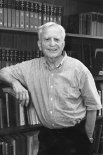

Please note: the AAS Obituaries are temporarily being hosted on this website while their full content is being ingested into the PubPub publishing platform newly adopted by the Bulletin of the American Astronomical Society. When the migration is complete, your existing links will take you to the final, migrated content. Contact peter.williams@aas.org with any questions.
George West Wetherill (1925-2006)
George W. Wetherill, 1997 National Medal of Science recipient, died from heart failure on 19 July 2006, at his Washington, DC home. Wetherill can be rightfully called the father of modern theories of the formation of the Earth. Prior to the first Protostars and Planets meeting in Tucson in 1978, planet formation theories tended to be eccentric concoctions created by distinguished senior scientists who had earned the right to dream a little bit about how our Solar System had formed. Wetherill was in the vanguard of the effort to place planet formation theory on a solid basis.
Born in Philadelphia on 12 August 1925, Wetherill served in the U.S. Navy during World War II, teaching radar at the Naval Research Laboratory in the District. He graduated from the University of Chicago in 1953 after receiving a succession of degrees: Ph.B., S.B., S.M., and Ph.D. Wetherill joined the staff of the Carnegie Institution's Department of Terrestrial Magnetism (DTM), located in northwest Washington, DC, in 1953. He and his colleagues at DTM and Carnegie's Geophysical Laboratory proceeded to revolutionize the field of geochemical dating of rocks by applying the physics he had learned at Chicago. Wetherill conceived of the concordia diagram, which uses the decay of radioactive uranium into lead to provide accurate dates for when the rocks crystallized. Wetherill's concordia diagram was a concept that found immediate and lasting acceptance, and stands as a singular achievement in the earth sciences. It opened up the field of geological dating for events that happened billions of years ago on the Earth and on other rocky bodies.
Wetherill's great early success in geochemistry led to his being appointed as a professor of geophysics and geology at UCLA in 1960. At UCLA, Wetherill began his second major undertaking, working on the orbital evolution of asteroids and of other small bodies in the Solar System. He was the first to show that debris kicked out from meteorite impacts on Mars could be expected to end up on Earth, as has been spectacularly verified by the dozens of Martian meteorites found to date on Earth. We now know that the cheapest way to get a sample of Mars is to send an expedition to the South Pole, where the Martian meteorites are sitting on the ice sheets, waiting to be picked up.
In 1975, Wetherill returned to DTM as its Director. At DTM Wetherill launched into his third major research area, planet formation modeling, using the skills he had developed at UCLA to study asteroids and meteorites. He quickly became the world's leading authority on the process by which the rocky inner planets formed through impacts between progressively larger and larger bodies. Wetherill was the first to point out that the Earth's formation involved impacts by bodies as large as Mars on the growing Earth. One such giant impact is the now-accepted explanation for how the Earth's Moon was formed -- an off-center giant impact produced a spray of hot rock that ended up in orbit around the Earth and then formed the Moon.
Wetherill stepped down as the Director of DTM in 1991, but continued to vigorously pursue his models of planet formation. In 1995, the first solid evidence of planetary systems orbiting other stars like our Sun was presented. In the decade since, astronomers have discovered nearly 200 planets in orbit around nearby stars, and recently may have found the first rocky planets. George Wetherill was way ahead of these discoveries. His 1996 models of terrestrial planet formation, combined with the latest discoveries, imply a rich future for those who seek to find Earth-like planets in our neighborhood of the galaxy.
Wetherill's scientific success has been widely recognized, perhaps more widely than that of any other first rank scientist. In 1997 he received the highest scientific award in the nation—the National Medal of Science. Wetherill was elected to the American Academy of Arts and Sciences in 1971 and to the National Academy of Sciences in 1974. He received the 1981 F. C. Leonard Medal of the Meteoritical Society, the 1984 G. K. Gilbert Award of the Geological Society of America, the 1986 G. P. Kuiper Prize of the Division of Planetary Sciences of the American Astronomical Society, and the 1991 Harry H. Hess Medal of the American Geophysical Union. In 2003 Wetherill was awarded the Henry Norris Russell Lectureship, the highest honor bestowed by the American Astronomical Society.
Survivors include his wife, Mary Bailey, of Washington, DC, and his daughters, Rachel Wetherill, of Round Hill, Virginia, and Sarah Wetherill Okumura, of Morgan Hill, California. He was preceded in death by his son, George W. Wetherill III, in 1974, and by his first wife, Phyllis Steiss Wetherill, in 1995.
Obituary written by: Alan Paul Boss (Department of Terrestrial Magnetism, Carnegie Institution of Washington)
BAAS Citation: BAAS, 2006, 38, 1284
SAO/NASA ADS Bibcode: 2006BAAS...38.1284B